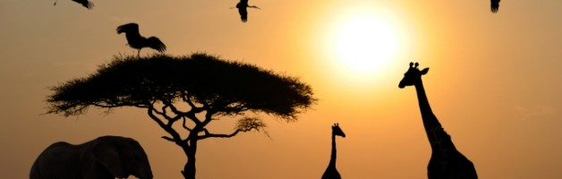
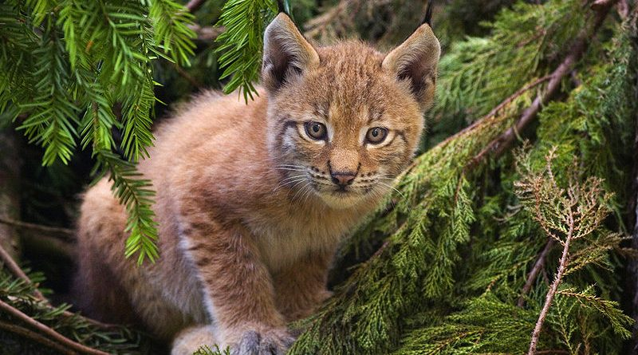

Цікаві факти про тих, кого ще можна врятувати!
| Назва латиною | Ursus arctos. |
| Характеристика | Ареал виду в Україні в минулому охоплював лісову і частково степову зони. Наразі
природоохоронний статус цього виду в Червоній книзі – «зникаючий», чисельність бурих ведмедів не перевищує 300 особин. Близько двох сотень клишоногих живе в Закарпатській та Івано-Франківській областях, ще 50 – у Львівській, у Чернівецькій області залишилося ще близько 20 тварин цього виду. |
| Причини зменшення | Інтенсивна експлуатація та омолодження лісів, велике рекреаційне навантаження на
них, браконьєрський відстріл тварин. |
| Назва латиною | Mustela lutreola. |
| Характеристика | Ще один «напівзниклий» житель нашої держави. Орієнтовно, в Україні мешкає лише
200-300 особин європейської норки. У Житомирській області чисельність виду за остан- ні 50 років скоротилася вчетверо. 1987 року в пониззі Дністра мешкало 60 норок, а у 2000 році – лише близько 10. |
| Причини зменшення | Інтенсивні зміни водно-болотних угідь у процесі господарського та рекреаційного
використання. Негативний вплив на популяцію європейського виду створює більш кон- курентоспроможна американська норка. |
| Назва латиною | Hemiechinus auritus. |
| Характеристика | Імовірно, чисельність виду в Україні не перевищує кілька десятків особин, проте вона ніко-
ли не була високою. За останні 20 років відомий лише один випадок контакту людини з цим їжаком: кілька років тому тварину бачили на околицях Луганська. Природоохоронний статус виду – «зникаючий». |
| Причини зменшення | Деградація степових екосистем, засадження ділянок псамофітного степу монокультурами
сосни і поширення їжака білочеревого. |
Ми пропонуємо пройти Тест , а заодно, дізнатися про них багато цікавого.